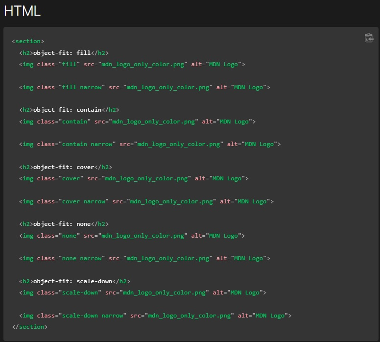
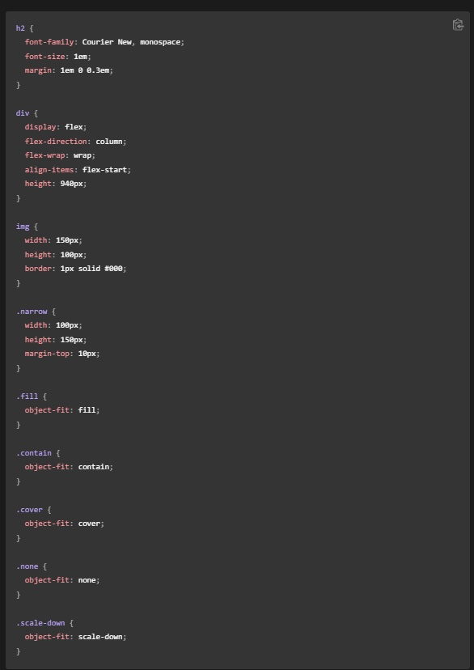

La propiedad object-fit se especifica con una de las palabras claves elegidas de la siguiente lista de valores.
El contenido reemplazado está dimensionado para mantener su relación de aspecto mientras se ajusta dentro del cuadro de contenido del elemento: su tamaño de objeto concreto se resuelve como una restricción de contenido contra el ancho y la altura utilizados del elemento.
El contenido reemplazado se dimensiona para mantener su relación de aspecto mientras llena el cuadro de contenido completo del elemento. Si la relación de aspecto del objeto no coincide con la relación de aspecto de su caja, entonces el objeto se recortará para que se ajuste.
Modifica el tamaño del elemento remplazado para llenar el cuadro de contenido. El objeto completo ocupará todo el espacio de la caja. Si el tamaño del elemento no concuerda con el de su caja, se estirará para llenarlo.
El contenido reemplazado no se redimensiona.
El contenido se dimensiona como si none o contain estuvieran especificados, lo que resultaría en un tamaño de objeto concreto más pequeño.
 Mobile first, una forma de mejora progresiva, es un enfoque de desarrollo y diseño web que se enfoca en la priorización del diseño y el desarrollo para dispositivos móviles por encima del diseño y desarrollo para pantallas de escritorio. El fundamento detrás del enfoque "mobile-first" es proveer al usuario una buena experiencia para todos los tamaños de pantalla—empezando por una experiencia de usuario que funcione bien para dispositivos pequeños, para posteriormente, basada en dicha experiencia, continuar desarrollando para enriquecer la experiencia de usuario conforme el tamaño de pantalla es mayor. El enfoque "mobile-first" contrasta con el antiguo enfoque de diseño para escritorio en el que se pensaba primero en el diseño/desarrollo para tamaños de pantalla de escritorio y posteriormente se realizaban ajustes para conseguir que dichos diseños y desarrollos funcionases correctamente en dispositivos móbilies.
El diseño web responsive o adaptativo es una técnica de diseño web que busca la correcta visualización de una misma página en distintos dispositivos. Desde ordenadores de escritorio a tablets y móviles. Hoy en día accedemos a sitios web desde todo tipo de dispositivos; ordenador, tablet, smartphone… por lo que, cada vez más, nos surge la necesidad de que nuestra web se adapte a los diferentes tamaños de los mismos.